<img> as data-original-src.
Contents: Basics; Alternatives; Coax; The PL259; Soldering Tools; Preparing the Coax; Soldering; Crimp On Connectors; Weather Sealing; Odds and Ends;
With a few exceptions, most coax is well made, and will provide years of service if you follow a few basic rules. What you read here is pointed toward the mobile operator, but the same basic information may be used for base station use too. There are a few special considerations when coax is used in a mobile installation, and I cover those below.
The Cablematic® coax prep tools listed below may be ordered from DX Engineering. These tools are some of the best money can buy, and make proper stripping of coax a very simple job. However, they will not strip some kinds of coax (see below). Incidentally, DXE sells a complete, private-labeled, coax cable kit, including a cable cutter. Further information is in the Neat Gadgets article.
Unfortunately, the lowly PL259 connector is never given a second thought. If they were, those $1 hamfest specials wouldn't sell like hot cakes. By the time you finish reading this article, you'll know why good quality connectors are so important to long-lasting, trouble-free, installations.
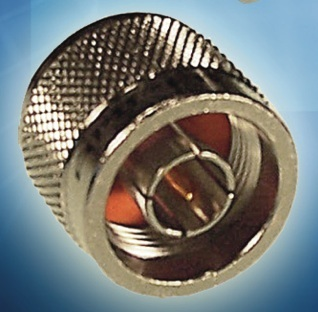
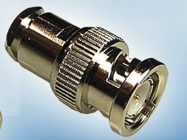
The other alternative is the BNC. Like the N, it comes in about a dozen different configurations to meet any need including tees, ells, and bulkheads. They come in both waterproof and standard styles, and are available to fit almost any sized coax cable from RG174 to RG213.There are a few things to remember about both of these alternatives to the PL259. They're both available in 50Ω and 75Ω versions, and they are not interchangeable! What's more, the ones for RG8X sized coax (≈.242" OD) are typically 75Ω, although there are 50Ω ones. There are some special ones for RG223 and RG214 (double shielded coax), which are not compatible with single-shielded coax cables. These facts require due diligence when ordering to make sure you get the correct units. If in doubt, ask the guys are RF Connection for assistance.
Over the years, every kind of connector has been used for RF, including RCA, F, TNC, BNC, N, and of course the PL259 (UHF class). Nowadays, almost all transceivers come with an SO239 chassis connector which mates with the PL259, because they are less expensive, and universally available.
Coax comes in many configurations. Center conductors can be solid or stranded, the dielectric can be solid, foam, and air. Shields can be solid, corrugated, copper or braided copper, silver or braided silver, aluminum in many different configurations, and even steel. The outer covering can be made of a myriad of materials exotic and otherwise, but usually consists of polyvinyl chloride or polyethylene. The nominal Z can be from 35 ohms to as high as 125 with the basic standards being 50 and 75 ohms.
Amateurs typically lump the various types into three “standard” configurations; RG8 (≈.405" OD), RG8X (≈.242"OD), and RG58 (≈.195"OD). However, these three different configurations are far from standardized. Since there isn't a mil-spec on any coax cable, relying on that specific designation isn't prudent.
The ARRL Handbook lists eleven types of RG8, six types of RG8X, and seven types of RG58. Since our focus here is mobile operation, we can narrow down the list rather quickly by eliminating RG8 sized coax, and here's why.
First, RG8 is rather stiff, and in the tight confines of a mobile, it makes installation more difficult. Its lower loss characteristics doesn't mean much either, as the difference in loss between 10 feet of RG8, and 10 feet of RG8x (an average mobile installation length), is a fraction of a dB. And, RG8X can easily handle 500 watts of power, even at an elevated SWR.
There are two things you need to remember about RG8X coax. The minimum bend radius is about 3 inches, so routing it through a trunk lip mounting bracket is a no-no. And since it is easily crushed, routing it through a door or truck seal is just as destructive.
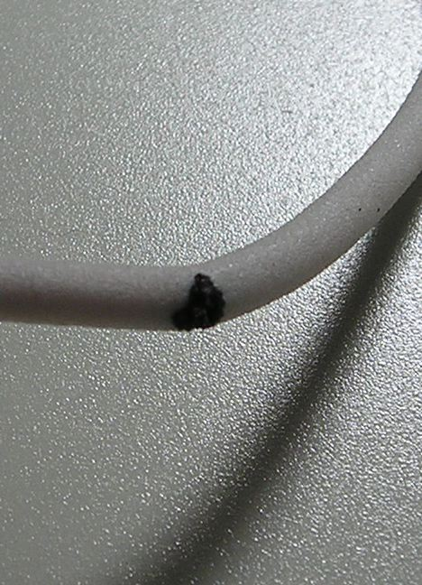
 Common mode current is almost a given in a mobile installation, especially ones which use abbreviated mounting schemes (lip, clip and mag mounts). Common mode also plays havoc with automatic antenna controllers. The usually way to deal with common mode is to wind a choke using a mix 31 split bead. They cost about $5 each (DX Engineering sells a package of 5 for ≈$30).
Common mode current is almost a given in a mobile installation, especially ones which use abbreviated mounting schemes (lip, clip and mag mounts). Common mode also plays havoc with automatic antenna controllers. The usually way to deal with common mode is to wind a choke using a mix 31 split bead. They cost about $5 each (DX Engineering sells a package of 5 for ≈$30).
The right photo depicts a 3/4 inch ID, mix 31 split bead, with 6 turns of RG8X through wound through it. Note the minimum 3 inch diameter turns which prevents the coax core from migrating!
The resulting choke exhibits an impedance of about 2.2kΩ at 10 MHz. By the way, if you're really careful, you can wind 7 turns of RG8X through a 3/4 inch ID bead. The resulting choke impedance will be about 2.7kΩ at 10 MHz. If you need more than that (lip, clip and mag mount), simply snap on a second bead which will (almost) double the impedance.
Two things need to be made clear. Teflon® insulated coax, or double shielded coax reaps no real benefits for the average amateur, to say nothing of the additional cost and connector complexity. This said, if the ambient temperature exceeds 70°C (158°F), Teflon® is the preferred choice. But remember this; subjecting an amateur transceiver to high ambient temperatures, is financially unrewarding!
Without doubt, the single most prevalent problem amateurs face is caused by the ubiquitous PL259! They typically are poorly or incorrectly soldered (if at all), and the coax preparation is almost never done properly. Adding insult to an already terse situation, the material making up cheap PL259s seemingly cannot be soldered. Some of them easily corrode or rust, and their sleeve threads are pressed, not cut. As a result, far too many amateurs end up blaming all matter of station equipment and antennas for their problems, rather than the real culprit—a cheaply made, and incorrectly installed PL259. Therefore, this is an attempt to address the situation by making a few pertinent suggestions.
So called teflon (note lower case T) insulated ones can be easily damaged by too much soldering heat. The reason is, most of them are polypropylene, not real, honest-to-john, Teflon®! So when you try to solder them, the insulator melts. Depending on the quantity purchased, real Teflon® (note the capital T) insulated PL259s, cost about $9 each (the latter with silver plated shells). Few amateurs will pay this much for a PL259. By the way, the Amphenol®part number for the silver plated, Teflon® insulated ones, is 83-822 (Mouser number 523-83-822), and cost about $5 each in quantity. They come in both silver plated and nickel plated shells (that's the ferrule you screw on to the SO239 chassis connector). The silver plated ones are preferred if you can find them. Mouser does not carry them, but they will special order them.
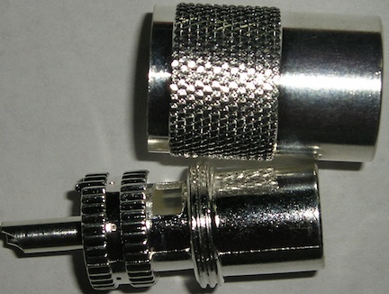
Reducing sleeves are a requirement for both RG58 (.192" OD), and RG8X (.242" OD) coax. For RG58, the correct Amphenol® part number is 83-185 (Mouser part number 523-83-185). You can also buy 83-168-RFX sleeves for RG8X. Unfortunately, they have a Japanned finish, and are very difficult to solder! If you're faced with this issue, there are two solutions.
You can buff the reducing sleeve with a wire brush, and pre-tin them. Just be careful not to put too much solder on the surface, you you will not be able to screw them into the PL259 body. Or, if you have a drill press and/or vice, buy the 83-185, silver-plated sleeves, and drill them out to .25 inches. Care must be taken, as brass tends to snatch badly.
Be advised that Amphenol's PL259 part number, 83-1SP-1050, has an Astroplate® body, and shell. Astroplate® is extremely difficult to solder, and it takes an iron with a lot of latent heat (no gun here folks!). Further, the 83-1SP-RFX has what is commonly referred to as a Japanned finish, but it is actually a nickel-based alloy. They're actually worse than the 83-1sp-1050 (!), and all but impossible to solder! You can file the finish off down to the brass, but that doesn't help much as the inside is also Japanned. The point to be made here is simply this; buying cheap connectors will cost you much more in the long run, than good quality ones ever will.
Be advised that PL259s, SO239s et. al., all fall under the generic classification, UHF connectors. Why this is so dates back before WWII when 300 MHz was considered UHF. They were never designed to be quick disconnects, but lots of folks use them as such. Be advised that off-and-on, day-to-day use (duty cycle) will cause them to lose contact integrity over time. Read that as a poor connection, with predictable results. This is also true of most other types of RF connectors.
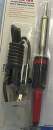
 If you just can't find a decent iron locally, here's a good source. This is Hobby Lobby's on-line ordering company, but if you have a store near you, then that's the place to go. It sells for $50, and is as good as you can buy even if you spend twice the amount. It comes with two tips, and the smaller one perfectly fits the groove in a PL259. It takes less than 2 minutes to solder a PL259 with this iron. It's best to clamp the iron in the vise and rotate the work, not the other way around, as this makes soldering easier.
If you just can't find a decent iron locally, here's a good source. This is Hobby Lobby's on-line ordering company, but if you have a store near you, then that's the place to go. It sells for $50, and is as good as you can buy even if you spend twice the amount. It comes with two tips, and the smaller one perfectly fits the groove in a PL259. It takes less than 2 minutes to solder a PL259 with this iron. It's best to clamp the iron in the vise and rotate the work, not the other way around, as this makes soldering easier.
Proper soldering of PL259s requires two soldering irons. The aforementioned iron, and a smaller one to solder the center conductors. A Weller pencil type (or one similar) with a 850°F tip will works perfectly.
Hobby Lobby also sells what they call an embossing gun, shown in pink here. It actually is a small heat gun, just right for those little heat-shrink bench jobs that don't require a lot of heat. If you use polyolefin, dual-walled, adhesive heat shrink to seal your connectors (as outlined below), this $20 tool is just the ticket! By the way, it comes in blue too!
Never cut coax with wire cutters! Doing so distorts the core and the center conductor making installation of the PL259 body rather difficult. If you don't have a proper cable cutter, a heavy-duty box cutter with a new blade will work. Lay the coax on a scrap chunk of lumber and tap the box cutter through the coax with a small hammer. The cut needs to be clean and even.
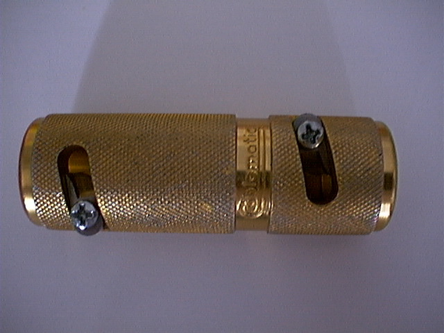
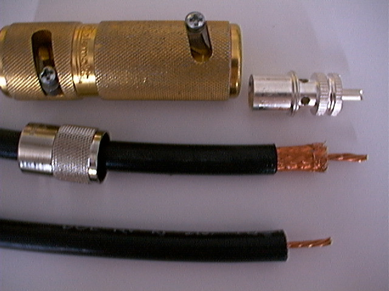 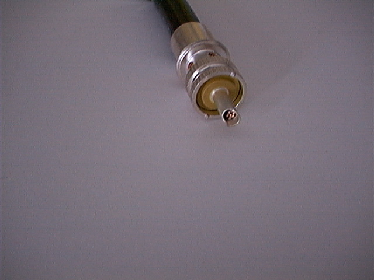
Always use good quality, rosin core solder. Never use acid core! I prefer Kesters® 60/40 because I know of its quality. That cheap stuff you buy from Radio Shack or Wal-Mart is not the solder of champions. By the way, I don't recommend lead-less solder (RoHS compliant) for coax connections, as it doesn't wet nearly as well as lead-based ones. So, here's a good suggestion. Buy yourself a small roll of 1/8 inch, 60/40, rosin core solder. It is too big for circuit board use, but it fits the bill connector-wise.
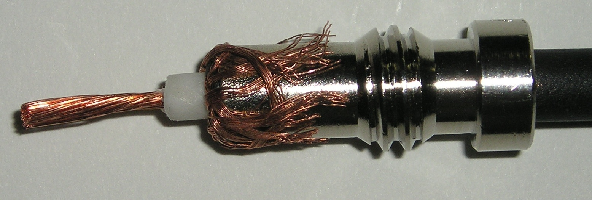
Make sure you put the threaded barrel over the coax, and in the correct direction first! If you use heatshrink tubing to seal the coax/connector junction, it should go on next, and placed well away from the end to prevent premature shrinkage while soldering. Then carefully slide the PL259 body over the end of the coax and screw it down over the jacket. A small pair of channel lock pliers works well for this purpose. Once resistance is felt stop threading. And speaking of resistance, once you get connectors screwed on both ends is a good time to use your DMM or VOM to check for shorts between the center and shield.
The aforementioned tools are for 83-1SP style PL259s. If you're using PL259s based around the 83-1SP-15RFX style, the outer cover cut will be tool long (1.25 inches verses 1.13 inches). Since no one makes a tool for the 83-1SP-15RFX style PL259s, is yet another good reason to purchase the correct 83-1SP units.
All too often I have seen amateurs cut the jacket away to the point the shield shows after assembly. This is not the proper way. Conversely, if you follow the cutting table listed in Amphenol's catalog, the jacket stripping length is too short, and on some PL259s, the jacket bottoms out before the core is snug against the back of the tip. Further, the jacket could cause contamination of the solder thus impeding its flow. Both good reasons for purchasing a UT8000.
All too often, folks pre-tin the coax shield before they screw on the connector. This is an unnecessary step, and one which can actually lead to a failure. Remember, the shield should be properly wetted to the inside of the connector. Pre-tinning might speed up that process, but what usually happens, once the solder flows into the hole, most folks stop. This leaves the shield only partly soldered to the connector.
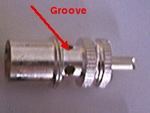
Whatever soldering iron you use, the flat part of the tip should just fit inside the groove of the connector. This assures a rapid flow of heat to the connector. If the soldering iron tip is well tinned, about 6 to 10 seconds later the barrel will be hot enough to accept solder. The solder should be applied just at the edge of each hole so it flows into the shield. Enough solder should be applied to fully wet the shield and close all four holes, one at a time. Use too much, and it could flow to the tip and cause a short. Use too little, and you won't have a good connection. This operation should take about 20 to 30 seconds and requires both hands; one to apply the solder and the other to rotate the coax. Now you know why you should clamp the iron in a vise. Once soldering is complete, it is time to recheck for shorts and continuity.
Some folks scoff at crimp on connectors because they believe their electrical characteristics are inferior to a soldered on PL259. Considering how some folks solder on PL259s, that's a falsehood! The truth is, if they're properly installed, you virtually cannot measure the impedance difference between a crimp on, and a properly soldered PL259.
RF Connection sells some of the best crimp on PL259s you can buy. They're silver plated so they do not rust, and they're available with a solder tip. The crimp on tips are fine too, but they're not waterproof. RF Connection sells both varieties, so be careful when you make your selection. The requisite manual crimping tools range from about $50 to $145 depending on quality. It should be noted that hand crimpers, even the ratchet types, take good hand strength to get a decent crimp. If you're slight at hand (no pun intended), then a hydraulic tool is worth the expense.
Seemingly, everyone uses vinyl electrical tape and/or coax seal on outdoor connections. Unfortunately, no matter how well you cover the connection, moisture can still seep in! This fact makes removal a sticky mess, no matter the quality of the vinyl tape used, even 3M's all-weather #88. Further, the adhesives used on most vinyl tapes have a tendency to corrode silver plated connectors, making them difficult to remove.
One often recommended alternative to vinyl tape is 3M's #23. It is a self-bonding, high-voltage rated, ethylene-propylene rubber adhesive tape. Its primary use is to built up stress cones for solid wire, high-voltage connections. While it is moisture resistant, 3M doesn't recommend it to be the last protective layer. It is also rather expensive!
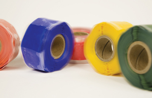
But, if you follow the aforementioned installation and soldering techniques, and completely fill-in all the solder holes, PL259 connectors are rather weather tight. You can make them even better by sealing the coax entry into the connector with polyolefin, dual-walled, adhesive heat shrink. All Electronics is one source. Nonetheless, they're not made to be immersed, and you should protect them from direct water spray.
Just in case you're tempted, forget about using friction tape, mylar mending tape, masking tape, duct tape and, packaging tape!
Salvaging PL259s is a losing battle, but lots of amateurs do it. As mentioned above, scrimping on coax and PL259s is a prescription for trouble, and it always happens at the most inopportune times. Like Field Day!
There are several styles of screw on (to the coax cover) PL259s—they are never apropos.
Once upon a time, the official designation for RG8 was not 50 ohms, but 52 ohms. Nowadays, it is difficult to find references to the latter, even though some brands actually measure closer to 52 ohms than they do 50 ohms. This brings up an interesting fact. Different runs of the same brand and type, may have different characteristic impedances. Nominally this isn't a worry unless you're using it for phasing lines, especially VHF ones. In this case, the coax should be measured to make sure the true impedance is known.
{kind=link}
{kind=link}
{kind=link}
{kind=link}
{kind=link}
{kind=link}
{kind=link}
{kind=link}
{kind=link}